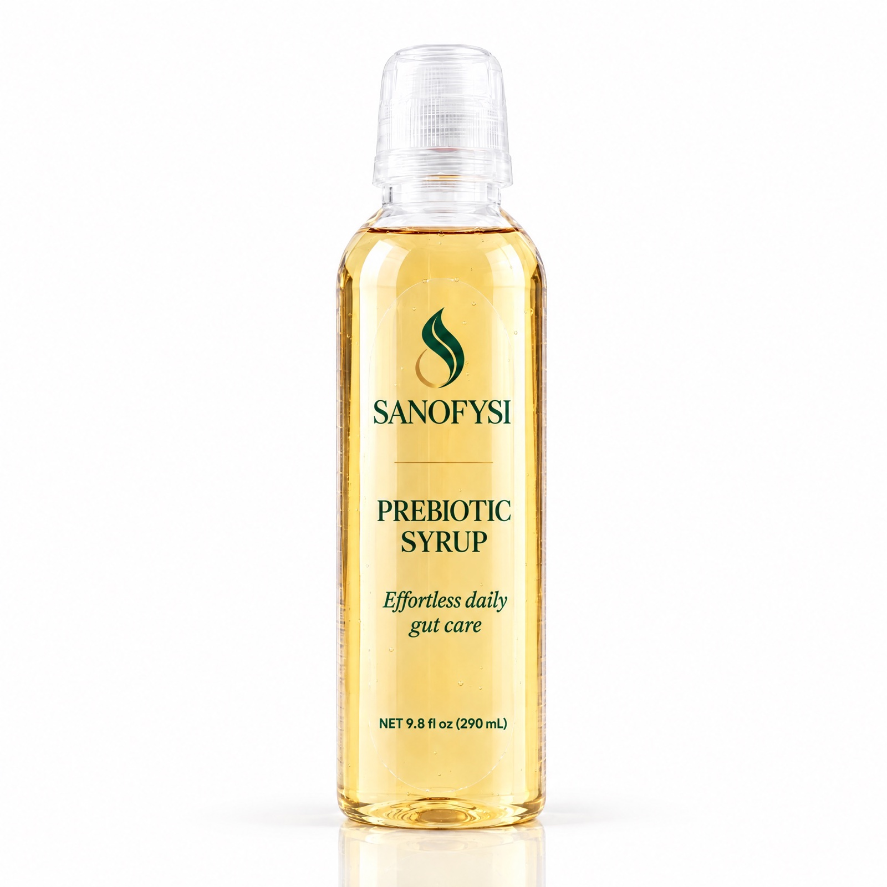

Sirop prébiotique
Votre intestin, chaque jour, sans effort
Une fibre végétale légèrement sucrée qui nourrit les bonnes bactéries de votre intestin. Elle se fond dans le thé, le café ou la bouillie que vous préparez déjà. Pas de poudre, pas de grumeaux, pas de nouvelle routine à apprendre.
- 14,3 gfibres prébiotiques
- 1,6 gsucres
- 35calories
Prix indiqué en dollars américains. Votre devise locale et les frais de livraison sont confirmés au moment du paiement.
- 95 % de FOS (fructo-oligosaccharides), une fibre prébiotique soluble
- 100 % végétal
- Se mélange aux boissons chaudes ou froides
Plus de fibres, sans rien changer à vos habitudes.
- La moitié de vos fibres du jour en une cuillère14,3 g par portion de 15 ml, soit 52 % de la valeur quotidienne.
- De quoi nourrir vos bonnes bactériesLes FOS sont une fibre soluble dont se nourrissent vos bactéries intestinales.
- Légèrement sucréUtilisez-le à la place d’une partie du sucre ou du miel de votre tasse, avec seulement 1,6 g de sucres.
- Liquide, pas en poudreIl se mélange aussitôt, à chaud comme à froid.
Une cuillère, chaque matin.
- 1DosezUne cuillère de 15 ml.
- 2MélangezDans le thé, le café, un smoothie, le yaourt ou la bouillie chaude.
- 3SavourezUne fois par jour, en buvant beaucoup d’eau tout au long de la journée.
Vous débutez avec les fibres ? Une cuillère est une grande portion. Commencez par une cuillère à café la première semaine, puis augmentez.
Une étiquette qui se lit d’un seul souffle.
Sirop de fructo-oligosaccharides (FOS) à 95 % : une fibre soluble, 100 % végétale.
- Contenance
- 290 ml (9,8 fl oz)
- Portions
- Environ 19
- À consommer dans les
- 18 mois
- Conservation
- Endroit frais et sec
Informations nutritionnelles
Portion : 1 c. à soupe (15 ml) · Portions par bouteille : environ 19
| Quantité par portion | % valeur quotidienne | |
|---|---|---|
| Calories | 35 | |
| Glucides totaux | 16 g | 6 % |
| Fibres alimentaires | 14,3 g | 52 % |
| Sucres totaux | 1,6 g | |
| Sirop de fructo-oligosaccharides | 19,67 g |
Les pourcentages de valeur quotidienne sont calculés sur la base d’un régime de 2 000 calories.
Moins de sucre. Beaucoup plus de fibres.
Ce que vous mettez dans votre tasse, cuillère pour cuillère. Le sirop prébiotique est moins sucré que le sucre ou le miel : il adoucit une boisson sans la rendre sucrée.
| Par cuillère à soupe | Calories | Sucres | Fibres |
|---|---|---|---|
| Sirop prébiotique | 35 | 1,6 g | 14,3 g |
| Sucre blanc | environ 48 | environ 12 g | 0 g |
| Miel | environ 64 | environ 17 g | 0 g |
Les chiffres du sucre et du miel sont des valeurs courantes.
Bon à savoir.
Envie d’en savoir plus ? Lisez ce qu’est un prébiotique et combien de fibres il faut par jour.
Qu’est-ce qu’un sirop prébiotique et à quoi sert-il ?
Sanofysi Prebiotic Syrup est un complément de fibres liquide composé à 95 % de FOS, une fibre prébiotique soluble. Il sert à ajouter des fibres à l’alimentation de tous les jours : une cuillère de 15 ml dans le thé, le café, la bouillie, le yaourt ou un smoothie apporte 14,3 g de fibres.
Que sont les FOS (fructo-oligosaccharides) ? Sont-ils bons ou mauvais ?
Les FOS, ou oligofructose, sont des fibres solubles naturellement présentes dans l’oignon, l’ail, la banane et la chicorée. Le corps ne les digère pas ; ce sont les bactéries de l’intestin qui s’en nourrissent. Comme pour toute fibre, une grande quantité d’un coup peut provoquer des gaz ou des ballonnements : augmentez progressivement.
Prébiotique et probiotique : quelle différence ?
Les probiotiques sont des bactéries vivantes, présentes dans le yaourt, les aliments fermentés et certains compléments. Les prébiotiques sont les fibres dont ces bactéries se nourrissent. Ce sirop est un prébiotique.
Quels sont les bienfaits des fibres prébiotiques ?
Les fibres prébiotiques nourrissent les bonnes bactéries de l’intestin et comptent dans votre apport quotidien en fibres. La plupart des adultes mangent moins que les 25 à 30 g conseillés par jour ; une cuillère de ce sirop en apporte 14,3 g.
Les fibres prébiotiques sont-elles solubles ou insolubles ?
Les FOS sont des fibres solubles. Elles se dissolvent entièrement dans un liquide, c’est pourquoi le sirop se mélange aux boissons chaudes et froides sans dépôt.
Combien de fibres par jour, et combien dans une cuillère ?
L’Organisation mondiale de la santé recommande au moins 25 g de fibres par jour pour un adulte, et les étiquettes utilisent une valeur de référence de 28 g. Une cuillère de 15 ml de sirop en contient 14,3 g, soit 52 % de cette valeur.
Comment le prendre, et à quel moment de la journée ?
Mélangez jusqu’à une cuillère de 15 ml par jour à une boisson ou au petit-déjeuner. Il n’y a pas de meilleur moment : la plupart des gens le prennent le matin avec le thé, le café ou la bouillie. Si vous débutez, commencez par une cuillère à café et augmentez sur une à deux semaines.
Peut-on prendre prébiotiques et probiotiques ensemble ?
Oui. Ils n’ont pas le même rôle et se prennent souvent ensemble : les probiotiques sont des bactéries vivantes, les prébiotiques sont les fibres qui les nourrissent.
Les prébiotiques peuvent-ils donner des gaz, des ballonnements ou la diarrhée ?
C’est possible si vous prenez beaucoup de fibres d’un coup, surtout sans y être habitué. Commencez par une cuillère à café, augmentez lentement sur une à deux semaines et buvez beaucoup d’eau. Si les symptômes persistent, arrêtez et consultez un professionnel de santé.
Les fibres aident-elles la digestion et le transit ?
Les fibres font partie d’une digestion normale et les autorités de santé conseillent d’en manger suffisamment, avec assez d’eau. Le sirop prébiotique est un complément alimentaire qui ajoute des fibres à votre alimentation. Ce n’est pas un médicament ni un traitement de la constipation ; si elle persiste, consultez un médecin.
Le sirop prébiotique est-il une alternative saine au sucre dans le thé et le café ?
C’est une façon moins sucrée d’adoucir une boisson. Son goût est légèrement sucré, moins que le sucre, et une cuillère de 15 ml contient 1,6 g de sucres et 35 calories. Une cuillère à soupe de sucre blanc contient environ 12 g de sucres, une cuillère de miel environ 17 g.
Est-ce mieux que le miel ou le sucre dans le thé ?
À cuillère égale, il contient beaucoup moins de sucres et apporte 14,3 g de fibres, que le sucre et le miel ne contiennent pas. Il est aussi moins sucré : certains utilisent la moitié de leur sucre habituel et une cuillère de sirop.
Contient-il du sucre, et combien de calories ?
Une cuillère de 15 ml contient 1,6 g de sucres et 35 calories. L’essentiel des 16 g de glucides est constitué de fibres.
Quel goût a-t-il, et peut-on l’utiliser dans les boissons chaudes, la bouillie et les smoothies ?
Il a un goût légèrement sucré, sans arrière-goût, et se dissout dans les liquides chauds et froids. Utilisez-le dans le thé, le café, la bouillie d’avoine ou de mil, le yaourt et les smoothies.
Ce complément de fibres convient-il aux femmes, aux hommes et aux enfants ?
Il est conçu pour les adultes, femmes et hommes. Demandez l’avis d’un professionnel de santé avant de donner un complément de fibres à un enfant.
Est-il d’origine végétale ?
Oui. Le sirop prébiotique est 100 % végétal.
Combien de temps dure une bouteille, et comment la conserver ?
Une bouteille de 290 ml contient environ 19 portions, soit environ 19 jours à raison d’une cuillère par jour. Gardez-la fermée, dans un endroit frais et sec, à l’abri du soleil, et utilisez-la avant la date indiquée sur l’étiquette.
Où l’acheter ? Livrez-vous en Côte d’Ivoire, au Sénégal, au Cameroun et dans le monde ?
Commandez en ligne chez Sanofysi. Nous livrons dans tous les pays d’Afrique, dont la Côte d’Ivoire, le Sénégal et le Cameroun, et partout dans le monde. Les frais et le délai estimé pour votre adresse s’affichent au moment de la commande.
Qui doit demander l’avis d’un médecin avant de prendre un complément de fibres ?
Les femmes enceintes ou qui allaitent, les personnes sous traitement médical, celles qui surveillent leur glycémie ou ont un diabète, et celles qui ont un trouble digestif comme le syndrome de l’intestin irritable.
Le soin de l’intestin, dans une cuillère.
Ajouter le sirop prébiotique au panierCe produit est un complément alimentaire. Il n’est pas destiné à diagnostiquer, traiter, guérir ou prévenir une maladie.